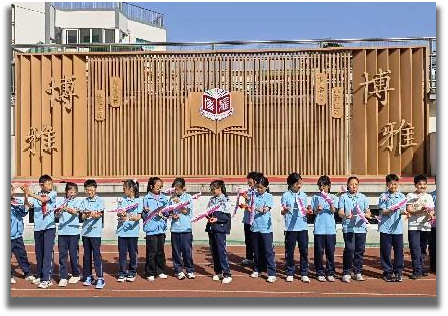
溧阳市溧城小学
记录学生组装、调试航模的过程，是科学实践课的趣味项目。
Low-Altitude Research
2025 年开始，低空经济走出政策加速期：央视财经预测市场规模破万亿元，
深圳、四川、广州、苏州等地陆续推出标准或博览会。
这一页把低空报道、三航科普和低空实践整理成三大板块，便于写作引用与展示。
Section 01
素材目录：images/低空融媒/，共 5 条，对应 5 个外链。
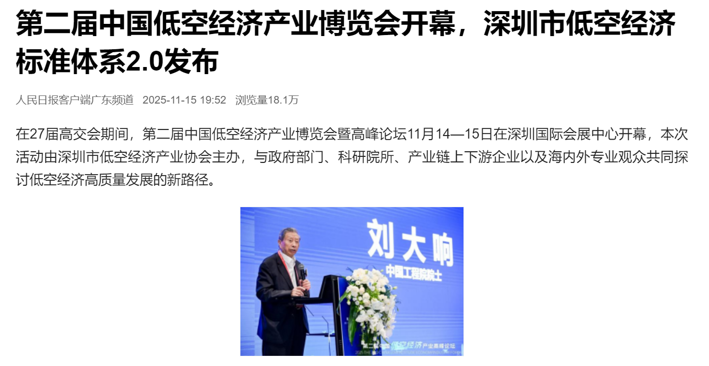
标准从“飞行+监管”拓展到“服务+产业链”，值得写入政策章节。
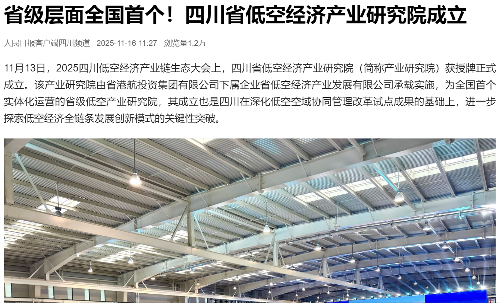
研究院定位“智库+孵化器”，可作为西部案例引用。
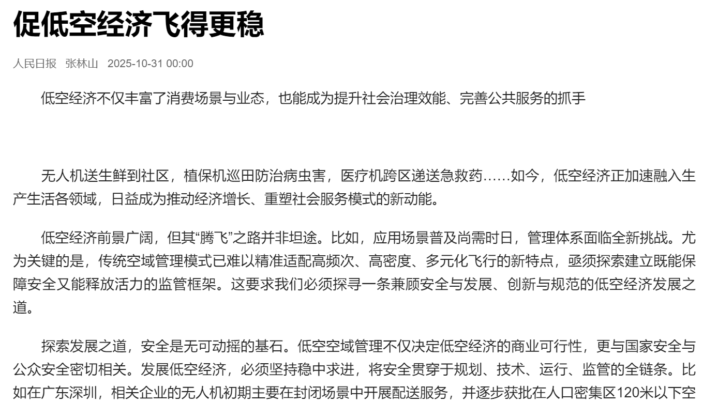
文章分析“空域资源、安全体系、商业模式”三道坎，适合做背景引用。
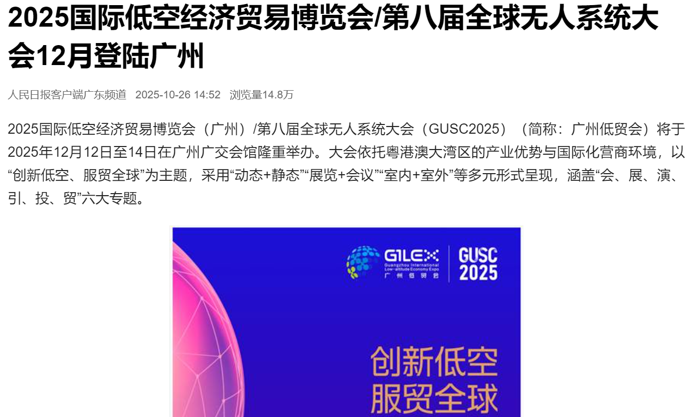
展会强调“贸易+赛事”组合，可放到产业交流章节。
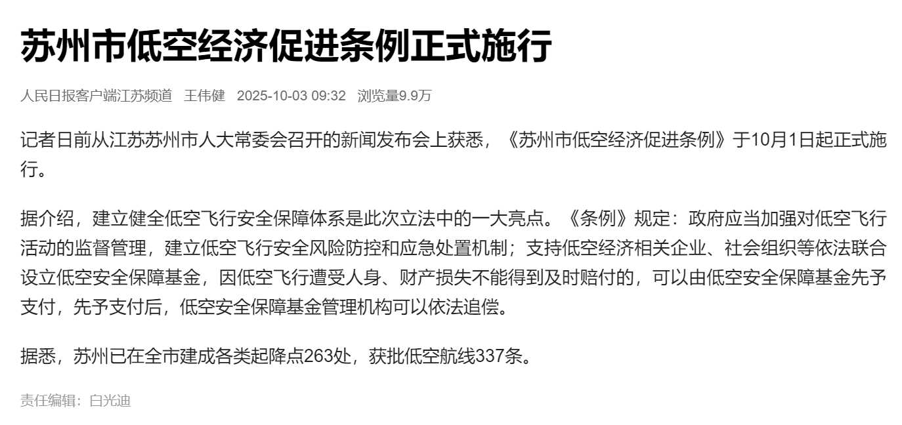
条例明确“空域划设、运行保障、人才支持”三大篇章，是地方立法的代表案例。
Section 02
素材目录：images/三航科普/，这里选了 6 张最常用的示意图。

记录学生组装、调试航模的过程，是科学实践课的趣味项目。
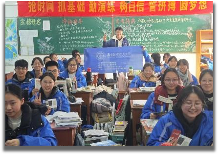
返回我的高中宣讲南航，传递三航梦想与三航相关知识。
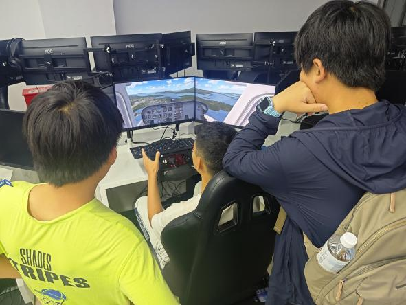
呈现学生通过模拟设备操控飞机航线飞行的实践体验。
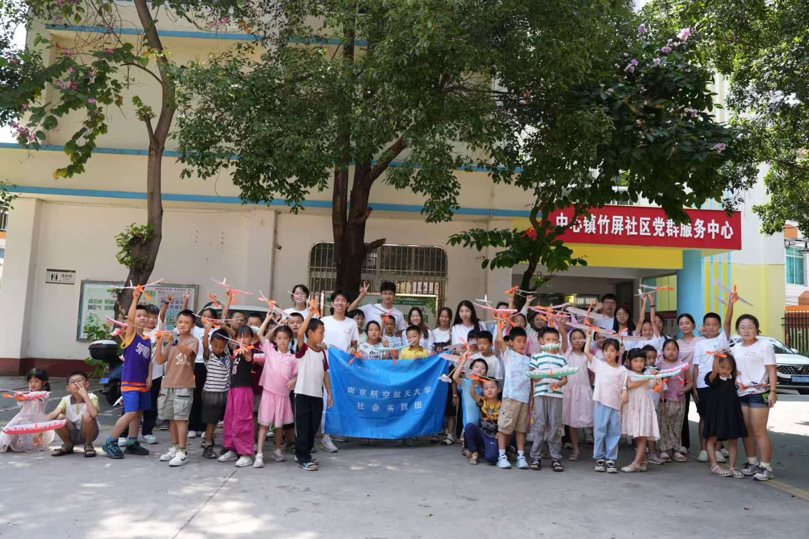
前往云南丽江华坪进行支教，激发云南山区学子的三航梦想。
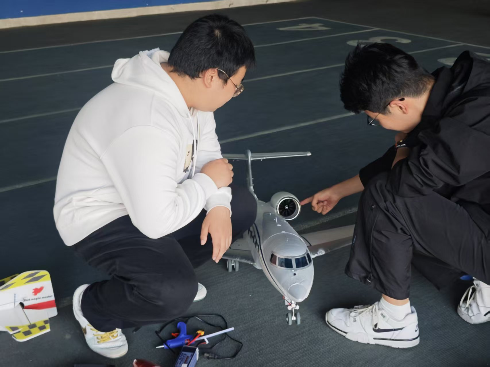
展示我们拆分、认知飞机模型部件的实操过程，是一种直观方式。
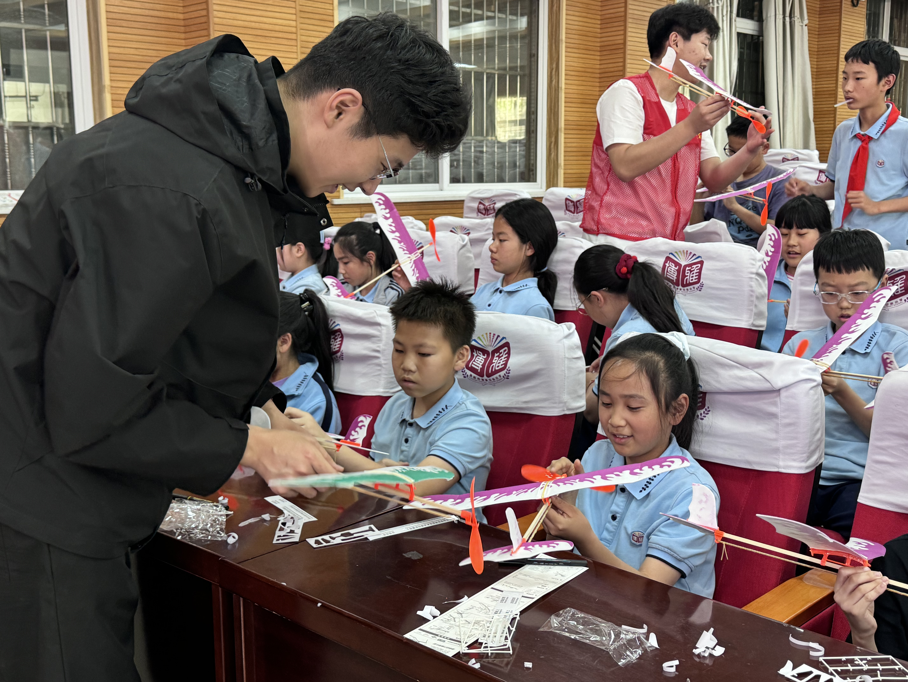
呈现我指导学生从零件拼接至成品调试的完整航模制作教学流程。
Section 03
参考资料：央视财经、央广网、地方政府公开报道（2025）。
Policy + Demo
央视财经 2025 年 7 月报道指出，全国低空经济有望在“十四五”收官前突破 1 万亿元规模， 重点建设 300+ 个低空起降场。 预计2025年突破1万亿元 低空经济未来如何发展？这场大会画重点可直接引用做数据来源。
Campus Practice
我们的做法是“政策+实操”两条线一起推进：课上研究深圳标准，课下在校园上空练飞行，是一个比较大学生的节奏。
· 物流演练：用多旋翼模拟 5 kg 以内的急件投送，参考 新浪科技对低空物流的解析。
· 防灾巡检：借鉴 中国航天科技关于低空经济政策的深度解读 的经验，排练河道巡查流程。
· 科普路演：结合三航科普图，做“低空实践 + 原理讲解”的PPT演示文稿。
以校园至高铁站 18 公里为例，模拟航线，估算能耗与空域占用。
参观低空科技企业或低空科技产业园，直观感受低空经济的发展趋势
把深圳标准 2.0、苏州条例等 PDF 做成索引，方便随时引用。
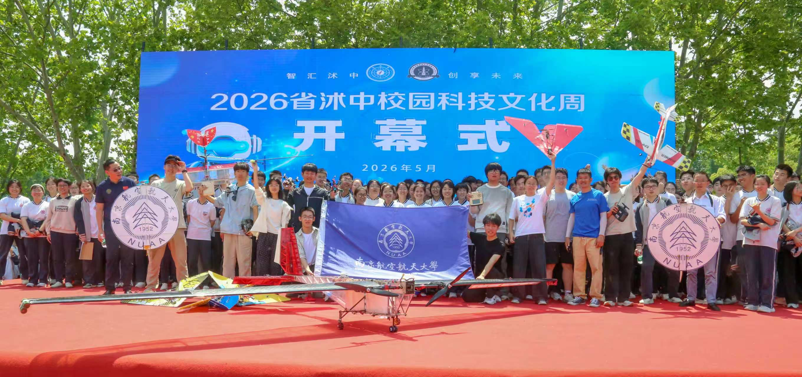
南航学子走进中小学开展低空科普宣讲、航模教学，深入产业园区实地调研，走访低空专业学子，以"产教融合+融媒传播"打通产业-高校-中小学联动渠道。点击查看企业日报网完整报道。